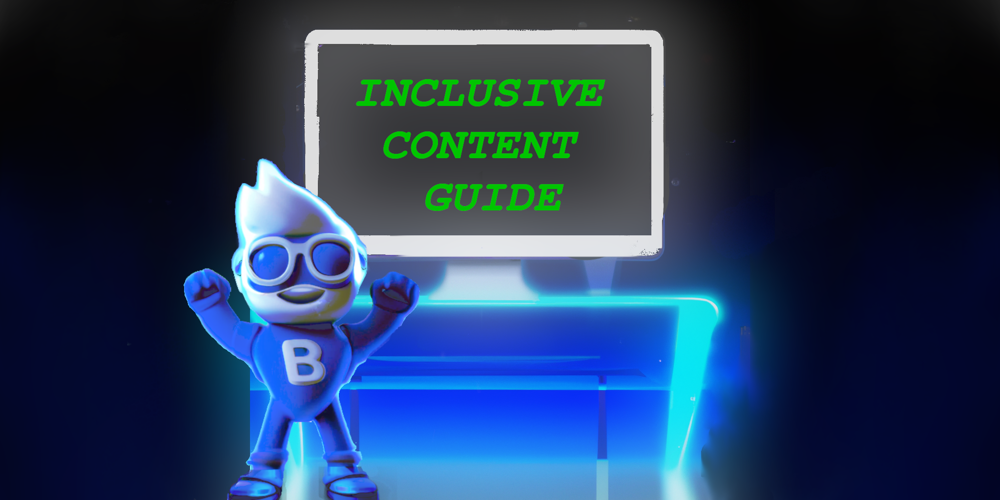

Footer © 2023 GitHub, Inc.

. In our increasingly inclusive society, creating accessible digital learning materials is essential to support diverse learners, including those with cognitive impairments. Approximately 2.16 percent of adults in the UK have a learning disability, and one in five people is neurodivergent. Moreover, an estimated 15–20 per cent of the population experiences difficulties with text or language comprehension, with dyslexia affecting 10 per cent of individuals. Additionally, visual impairments can indirectly impact language comprehension.
In October 2022, in the UK, 154,871 of PIP claimants had an autistic spectrum disorder recorded as their main condition, accounting for 4.9 per cent of all PIP; seventy-five per cent were male. Within the UK and Europe, the Equality Act 2010 prohibits discrimination and promotes equal opportunities for individuals with protected characteristics, including disabilities; websites must make reasonable adjustments to ensure that disabled people can access their services.
Public Sector Bodies Accessibility Regulations 2018 have adopted Web Content Accessibility Guidelines (WCAG) 2.1 at level AA is adopted by public bodies in the UK, ensuring content is accessible and inclusive. The EU Web Accessibility Directive sets public sector websites and mobile applications requirements. In the United States, the Americans with Disabilities Act (ADA) applies to websites of public entities and places of public accommodation.
Neurodiversity is the idea that neurological differences like autism and ADHD result from normal, natural variations in the human genome. Many neurodivergent people have higher-than-average skills when it comes to skills in pattern recognition, memory, or mathematics. When SAP started its Autism at Work program in 2013, applicants included people with master’s degrees in mathematics, physics and engineering. Some applicants had dual degrees. Hewit Packards Enterprises placed more than 30 participants in software-testing roles at Australia’s Department of Human Services research is 30 per cent more productive, ?
People with reading impairments may face challenges accessing and comprehending traditional job advertisements that rely heavily on written text. Organizations must consider advertising job positions on nontraditional platforms accommodating various communication preferences to ensure inclusivity. Such as Instagram, which uses images and short captions, can make the information more accessible to candidates with reading difficulties. Additionally, podcasts or audio-based channels to promote job openings can reach candidates who prefer or rely on auditory information rather than written content.
Large text blocks are challenging for those with reading difficulties. The Minto Pyramid Principle used technical writers uses a technique of commencing with major arguments, then progressively detailing more minor points. Heatmaps reveal most people prefer reading in an F-pattern; use headings establish a visual hierarchy, aiding navigation and content anticipation.
Conciseness and well-formatted content are essential for effective communication. The structure and organization of the text, as well as word choice, significantly influence reader comprehension. For instance, people with moderate learning disabilities can still easily understand sentences of 5 to 8 words. While neurotypical people can recognize word shapes and skip words while reading, individuals with learning difficulties and visual compression impairments may find it more challenging and read each letter. Comic Sans, although negatively thought of by the design community, is helpful for dyslexic people.
Guiding sentences involve placing the most important content at the beginning of the paragraph, enhancing understanding. Using an active voice improves clarity and focus for readers because the subject performs the action. Using simple language without idioms will help them get a better translation.
Acronyms should be well-defined in a place easily accessible by the user. In software engineering, acronyms such as SPA can have several meanings, such as single page application. DDD (domain-driven design) uses a shared vocabulary called a ubiquitous language it ensures everybody has an understanding including non-domain experts.
Images and other graphics often support written content and reduce the cognitive load. However, images depicting data, such as graphs, can overload people. Therefore, choosing a simpler structure like a pyramid is preferable. Research indicates that emotional images create a more positive learning experience. It is essential to use alternative text for images to accommodate individuals with visual impairments, video content should provide captions and audio descriptions where possible.
UX design encompasses the entire user journey and involves understanding customers, creating prototypes, and testing. UI design focuses on the visual presentation and aesthetics of the interface. Interaction design focuses on designing effective and engaging interactions within the interface to enhance the overall user experience, where aesthetics and usability work to create a pleasurable user experience. A consistent layout which does not jump between pages provides an intuitive experience. Microinteractions enhance the user experience by providing feedback.
The mobile-first approach can simplify user interfaces by starting with a simple design which is scaled up. The method uses simple icons that can be easily identified, and links and buttons use self-contained actions that avoid using ambiguous terms such as ”next” or ”click here.”; instead, it provides clear information about its expected outcome. It enhances clarity for all users while addressing the particular needs of individuals with cognitive impairments or mental health challenges.
Historical breadcrumbs can help people with memory impairments and hierarchical providing visual-spatial. People may have both conditions; therefore, having both forms is more beneficial. Visual-spatial impairments affect orientation and the user’s ability to understand or imagine maps and models. Which theses disorientated when navigating between a series of pages that make up a more extensive website.
Providing customizable options and accessibility features in digital content and interfaces can help mitigate issues and create a more inclusive user experience. Allowing the user to choose the font size can improve readability. Enabling the user to choose between light and dark modes and the number of components on the screen can help reduce overstimulation.
Heuristic frameworks aim to improve website usability, measuring things such as learnability, usability, reducing cognitive load and reducing errors. Designers should be aware they were not built to support neurodivergent people. The most popular frameworks are Jakob Nielsen’s 10 Usability Heuristics for User Interface Design and Shneiderman’s Eight Golden Rules of Interface Design. There are many more to choose from depending on the context of use such as in a voice interface where.
ISO 9241-110 is a part of the ISO 9241 series of international standards that addresses human-system interaction and ergonomics. Specifically, ISO 9241-110 is titled ”Ergonomics of human-system interaction — Part 110: Interaction principles.” The standard sets a good foundation for addressing accessibility needs emphasizing the interface should be adaptable such as the support for screen readers and keyboard navigation.
User interfaces should be adaptable and flexible for different conditions, such as adapting to different screen sizes and for screen readers, to ensure consistency in interface design choices such as naming, formats and procedures are maintained in similar contexts and are different when applied to other contexts.
WCAG 2 and the W3C Cognitive and Learning Disabilities Accessibility Task Force (COGA) are initiatives by the World Wide Web Consortium (W3C) to promote web accessibility for individuals with disabilities. The work of COGA contributes to the overall goal of making web content more accessible and inclusive for individuals with cognitive impairments within the broader framework of WCAG 2.
WCAG 2, or Web Content Accessibility Guidelines 2.0, is a set of internationally recognized guidelines developed by the Web Accessibility Initiative (WAI) of the World Wide Web Consortium (W3C). These guidelines aim to make web content accessible to people with disabilities, including those with visual, auditory, cognitive, and motor impairments. WCAG 2 provides a comprehensive framework to ensure that digital content and websites are perceivable, operable, understandable, and robust for all users, regardless of their abilities.
WCAG 2 provides four main principles, each with specific guidelines and success criteria:
1. **Perceivable:** This principle focuses on making web content perceivable to all users. It includes procedures for providing text alternatives for non-text content, offering alternatives for time-based media, ensuring content is adaptable, and distinguishing visual elements.
2. **Operable:** The principle emphasizes that web content should be easy to navigate and operate. It includes guidelines related to keyboard accessibility, providing sufficient time for users to read and interact with content, avoiding content that could cause seizures or physical discomfort, and facilitating navigation and user interface components.
3. **Understandable:** The understandable principle aims to ensure that content is clear and comprehensible. It includes readability, predictability, input assistance, and error prevention guidelines.
4. **Robust:** The robust principle focuses on ensuring that web content is compatible and interpretable by various user agents, including assistive technologies. It includes guidelines for using valid code, compatibility with current and future technologies, and handling content gracefully when technologies are not supported.
WCAG 2 guidelines set three conformance levels: A, AA, and AAA. Each level includes a specific set of success criteria, with Level A representing the minimum level of accessibility and Levels AA and AAA offering higher levels of accessibility. Achieving full WCAG 2 conformance, especially at the AAA level, can be challenging for certain types of content and may not be possible in all situations. WCAG 2 has become the standard for web accessibility, and many countries and organizations have adopted it as the basis for their accessibility regulations and policies. By adhering to WCAG 2, web developers and content creators can enhance the usability and inclusivity of their digital products, making the web more accessible for people with disabilities.
The W3C have a Cognitive and Learning Disabilities Accessibility Task Force (COGA), which identifies five categories of cognitive impairments: Language Comprehension, Visual Comprehension, Visual-Spatial Comprehension, Executive Function and Focus.
|
Cognitive Impairment |
Strategies |
|
|
|
|
Language Comprehension |
Difficulties in understanding written or spoken language, including processing complex sentence structures, understanding abstract concepts, and grasping the meaning of words and phrases.
|
|
Visual Comprehension |
Challenges in processing visual information, such as images, graphics, or symbols, make it difficult to understand the visual content.
|
|
Visual-Spatial Comprehension |
Difficulties in understanding and interpreting spatial relationships and concepts, affecting how individuals perceive and navigate visual information.
|
|
Executive Function and Focus |
Impairments in cognitive processes like attention, planning, decision-making, and impulse control, impacting the ability to focus, follow complex instructions, or manage multiple tasks.
|
|
Memory |
Impairments related to short-term memory, long-term memory, or working memory, affecting the ability to retain and recall information.
|
|
|
|
|
|
|
|
|
|
Testing at different levels of the software development cycle is vital to prevent errors before they reach the production stage. Unit testing focuses on testing small, individual code units, acceptance testing ensures that the application meets business requirements, and integration testing verifies the interactions between different components.
While automated tests are a cornerstone of CI/CD (Continuous Integration and Deployment) pipelines, human evaluators can catch unintended errors that may negatively impact the user experience by understanding context, domain and users; using both leads to more comprehensive and effective testing and heuristic evaluations.
Several tools can fit into the CI/CD pipeline to automate tests, such as Selenium WebDriver performs performance and accessibility audits for web pages and HTML components for usability. It can produce tests for various devices and displays.
Axe by Deque Systems provides a set of JavaScript APIs and browser extensions that allow developers to automate accessibility testing during the development and testing phases. Axe integrates into various development workflows, including manual testing, automated testing, and continuous integration.
Designers need to be made aware of what improvements are necessary to accommodate the needs of the audience. Gaining feedback is essential for improving user experience. Verbal communication provides a way of understanding an individual’s needs to identify and understand each person’s specific learning difficulties gaining insights into strengths, weaknesses, and learning styles. Using active listening promotes understanding with individuals. Ensuring communication is empathetic validating feelings by using about your own experiences can ensure a positive experience. Active listening hen a person is misinformed person can help identify what fallacies the person holds and help the person be more receptive to argument. To fosters clarity and prevents misunderstandings paraphrase what is said and use visual aids.
Organizations can have positive intentions to help; they need to ensure a person’s agency and decision-making capabilities are respected, which may lead to people losing their sense of autonomy, individual rights, and self-determination, pointing to neurodiversity champions or executive sponsors for neurodiversity initiatives that can highlight opportunities.
Jim Hogan is an accomplished technology executive who is autistic and diagnosed when he was four years old; Hogan, now 55, has worked at Google; he has more than one role: he serves as principal innovation strategist, healthcare and life sciences, and vice president of accessibility in technology. Before having technology management and director roles at companies including Accenture, Verizon, Kaiser Permanente, and Genesys, he values Google stating that ”they provide innovation evangelism, accessibility for everyone, and try to make work environment psychologically safe for everyone”.
Inclusion Safety: It focuses on creating an environment where individuals feel accepted, respected, and valued, leading to a sense of belonging and free expression of thoughts and ideas.
Learner Safety: It promotes a culture of continuous learning, where individuals are encouraged to explore new ideas, learn from mistakes, and support their pursuit of knowledge and skill development.
Contributor Safety: It ensures individuals feel confident to share insights and ideas without fear of judgment, leading to active engagement, diverse perspectives, and collective contributions.
Challenger Safety: It encourages individuals to question the status quo, express dissenting opinions, and propose alternatives, fostering innovation and identifying potential pitfalls in decision-making.